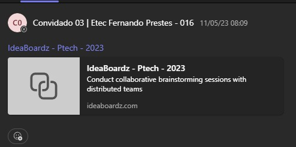
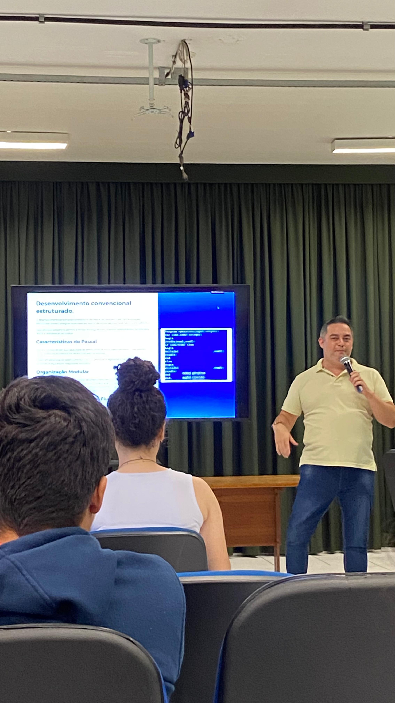
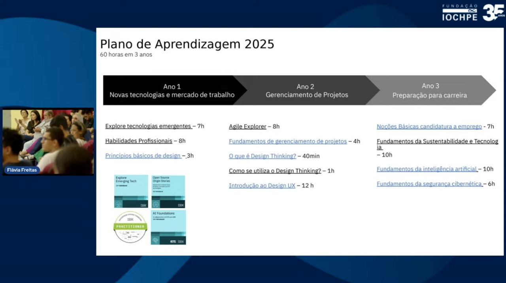

1º Ano
No dia 27 de abril de 2023, ocorreu uma reunião com as representantes das empresas Eduzz e Uno.

No dia 04 de maio de 2023, uma palestra foi conduzida pelo dono da empresa Itix, abordando temas relacionados à empresa.

No dia 05 de maio de 2023, uma palestra foi conduzida por uma representante da empresa Itix, abordando detalhadamente os temas relacionados à interpretação e relacionamento humano tem tanto valor quanto o código.

No dia 11 de maio de 2023, uma palestra foi conduzida de forma remota pela empresa Itix, abordando sobre Ética e Valores.
No dia 16 de novembro de 2023, tivemos um treinamento com um representante da empresa Itix, onde aplicamos o método Scrum em um projeto sobre Reciclagem. Aprendemos a trabalhar em equipe de forma mais rápida e eficiente e estamos aplicando esses conhecimentos em nossos projetos atuais.
2º Ano
No dia 08 de abril de 2024, participamos de uma palestra com o representante da empresa Itix, cujo tema central foi "Criatividade e Inovação: Um Desafio Constante".

No dia 23 de maio de 2024, foi realizada uma palestra na Etec Fernando Prestes, ministrada por Guilherme Bastos, da empresa Tegra. O tema abordado foi "As possibilidades da IA no mercado de trabalho".

No dia 27 de maio de 2024, a Eduzz organizou uma palestra online ministrada por Victor Palencia, que abordou o tema "Liderança e Gestão 3.0".

No dia 18/06, tivemos um bate-papo com os estagiários da Itix, das 08h às 10h. Logo em seguida, assistimos a uma palestra com o tema: 'Explorando Homelabs: Como criar seu próprio ambiente de desenvolvimento pode transformar sua carreira em TI', ministrada pelo palestrante Edmilson.

No dia 31/07, assistimos a uma palestra da empresa Eduzz com o tema: 'Hacker do bem e a segurança digital no dia-a-dia', ministrada pelo palestrante Luiz Milagres.

No dia 28/08, assistimos a uma palestra da empresa Eduzz, com o tema: 'Você é uma pessoa organizada?', ministrada pelos palestrantes Vinicius e Michele.

No dia 29/08, assistimos a uma palestra da empresa Uno com o tema: 'Fluxo de Operações Comercial', ministrada pelos palestrantes André Lopes e Tamiris Marciano.

No dia 05/09, assistimos a uma palestra da empresa Tegra com o tema: 'Quais as tendências da área de TI com a virada da IA Generativa e outras tecnologias', ministrada pelo palestrante Guilherme Bastos.

No dia 24/09, assistimos a uma palestra da empresa Eduzz com o tema: 'Capricho: skill cada vez mais raro no Mercado', ministrada pelo palestrante Luiz Milagres .

No dia 10/10, assistimos a uma palestra da Tegra com o tema: 'Desenvolvimento Low-Code', ministrada pelo palestrante Guilherme Bastos.
No dia 17/10, assistimos a uma palestra da Iochpe com o tema: 'da Fatec para o mundo', ministrada pela palestrante Flavia Freitas.
